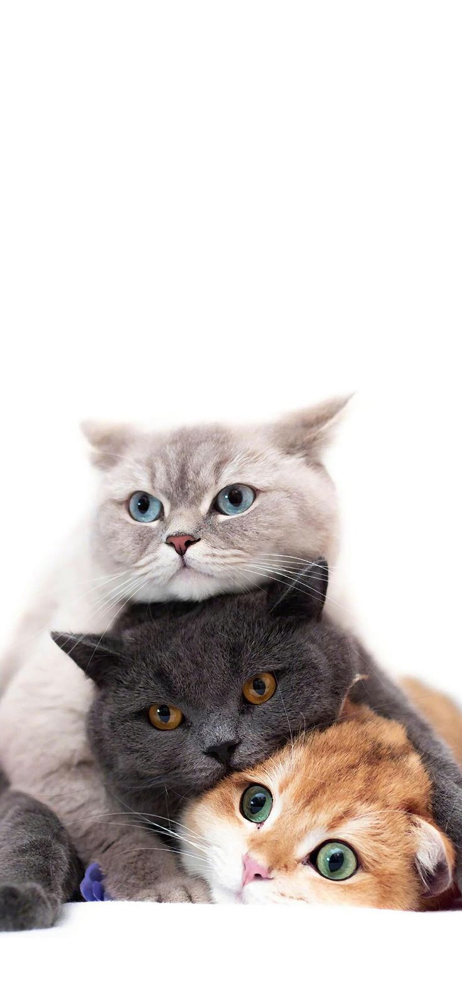

Miaw Loaver
Apa itu kucing?
Tentang kucing
Kucing adalah hewan mamalia kecil yang sering dijadikan hewan peliharaan oleh manusia. Secara ilmiah, kucing termasuk dalam keluarga Felidae dan merupakan anggota genus Felis. Kucing domestik (Felis catus) berasal dari kucing liar yang tinggal di daerah Timur Tengah dan Afrika Utara.
Ciri-ciri Kucing
Kucing memiliki ciri-ciri fisik seperti tubuh yang lincah dan lentur, cakar yang dapat ditarik masuk, telinga yang tajam, dan gigi-gigi tajam untuk memangsa dan mengunyah makanannya. Bulu kucing bervariasi warna, panjang, dan pola, tergantung pada rasnya. Ada banyak ras kucing yang telah dikembangkan dengan ciri-ciri yang berbeda-beda.
Kebiasaan Kucing
Kucing adalah hewan yang sangat lincah, cerdas, dan mandiri. Mereka dikenal memiliki kemampuan berburu yang baik dan sering kali merupakan hewan yang bersahabat dengan manusia. Selain itu, kucing juga bisa menjadi teman yang menyenangkan dan menghibur dalam kehidupan sehari-hari. Mereka sering kali berinteraksi dengan manusia melalui berbagai perilaku seperti bermain, menggosok-gosokkan tubuhnya, atau mendengkur untuk menunjukkan kepuasan atau kenyamanan.
Sebagai hewan peliharaan, kucing membutuhkan perawatan yang baik, termasuk pemberian makanan yang seimbang, air minum yang cukup, perawatan bulu, dan perhatian dari pemiliknya. Kucing juga membutuhkan lingkungan yang aman dan nyaman untuk beraktivitas. Selain itu, kucing juga bisa menjadi hewan yang peka terhadap kesehatan, sehingga perawatan kesehatan yang teratur seperti vaksinasi dan pemeriksaan medis perlu dilakukan.